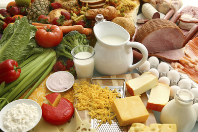

Health Tips For Healthy Living
Base your meals on starchy carbohydrates
Starchy carbohydrates should make up just over one third of the food you eat. They include potatoes, bread, rice, pasta and cereals. Choose wholegrain varieties (or eat potatoes with their skins on) when you can: they contain more fibre, and can help you feel full for longer. Most of us should eat more starchy foods: try to include at least one starchy food with each main meal. Some people think starchy foods are fattening, but gram for gram the carbohydrate they contain provides fewer than half the calories of fat.Keep an eye on the fats you add when you're cooking or serving these types of foods because that's what increases the calorie content, for example oil on chips, butter on bread and creamy sauces on pasta.
Eat lots of fruit and veg
It's recommended that we eat at least five portions of a variety of fruit and veg every day. It's easier than it sounds. Why not chop a banana over your breakfast cereal, or swap your usual mid-morning snack for a piece of fresh fruit? Unsweetened 100% fruit juice, vegetable juice and smoothies can only ever count as a maximum of one portion of your 5 A DAY. For example, if you have two glasses of fruit juice and a smoothie in one day, that still only counts as one portion
Eat more fish – including a portion of oily fish
Fish is a good source of protein and contains many vitamins and minerals. Aim to eat at least two portions of fish a week, including at least one portion of oily fish. Oily fish contains omega-3 fats, which may help to prevent heart disease.
Oily fish include: Salmon,Trout,Herring,Fresh Tuna,Sardines
Non-oily fish include: Codd, Canned Tuna, Hake
If you regularly eat a lot of fish, try to choose as wide a variety as possible. You can choose from fresh, frozen and canned: but remember that canned and smoked fish can be high in salt.
Eat less salt
Eating too much salt can raise your blood pressure. People with high blood pressure are more likely to develop heart disease or have a stroke. Even if you don’t add salt to your food, you may still be eating too much. About three-quarters of the salt we eat is already in the food we buy, such as breakfast cereals, soups, breads and sauces. Use food labels to help you cut down. More than 1.5g of salt per 100g means the food is high in salt. Adults and children over 11 should eat no more than 6g of salt (about a teaspoonful) a day. Younger children should have even less.
Don't get thirsty
We need to drink plenty of fluids to stop us getting dehydrated – the government recommends 6-8 glasses every day. This is in addition to the fluid we get from the food we eat. All non-alcoholic drinks count, but water and lower-fat milk are healthier choices. Try to avoid sugary soft and fizzy drinks that are high in added sugars and calories, and are also bad for teeth. Even unsweetened fruit juice and smoothies are high in free sugar. Your combined total of drinks from fruit juice, vegetable juice and smoothies should not be more than 150ml a day – which is a small glass. For example, if you have 150ml of orange juice and 150ml smoothie in one day, you'll have exceeded the recommendation by 150ml. When the weather is warm, or when we get active, we may need more fluids.
Don't skip breakfast
Some people skip breakfast because they think it will help them lose weight. In fact, research shows that people who regularly eat breakfast are less likely to be overweight. Breakfast has also been shown to have positive effects on children’s mental performance and increase their concentration throughout the morning. A healthy breakfast is an important part of a balanced diet, and provides some of the vitamins and minerals we need for good health. A wholegrain, lower-sugar cereal with fruit sliced over the top is a tasty and nutritious breakfast.